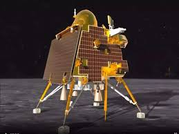
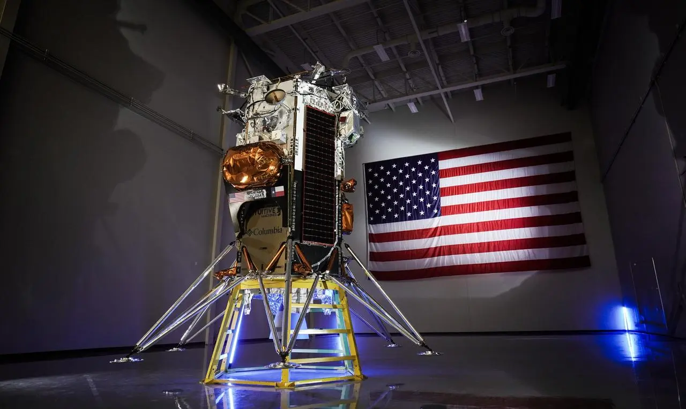
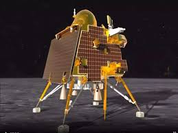
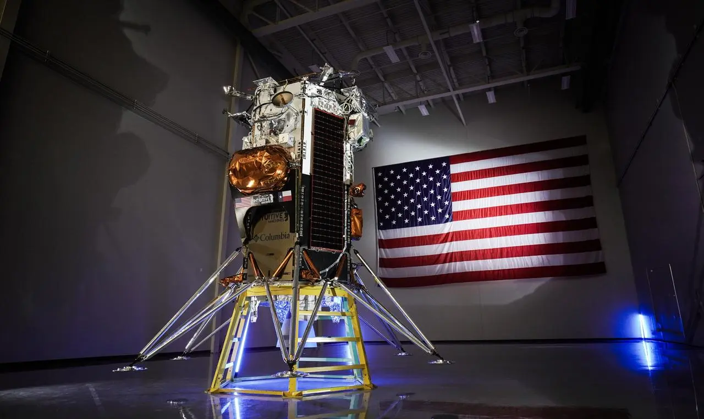

About solar system
The Solar System is the gravitationally bound system of the Sun and the objects that orbit it. It formed about 4.6 billion years ago when a dense region of a molecular cloud collapsed, forming the Sun and a protoplanetary disc. The Sun is a typical star that maintains a balanced equilibrium by the fusion of hydrogen into helium at its core, releasing this energy from its outer photosphere. Astronomers classify it as a G-type main-sequence star
Planets
The largest objects that orbit the Sun are the eight planets. In order from the Sun, they are four terrestrial planets (Mercury, Venus, Earth and Mars); two gas giants (Jupiter and Saturn); and two ice giants (Uranus and Neptune). All terrestrial planets have solid surfaces. Inversely, all giant planets do not have a definite surface, as they are mainly composed of gases and liquids. Over 99.86% of the Solar System's mass is in the Sun and nearly 90% of the remaining mass is in Jupiter and Saturn.
Formation
The Solar System formed at least 4.568 billion years ago from the gravitational collapse of a region within a large molecular cloud. This initial cloud was likely several light-years across and probably birthed several stars. As is typical of molecular clouds, this one consisted mostly of hydrogen, with some helium, and small amounts of heavier elements fused by previous generations of stars.
Some successful Satellites

 



China's Chang'e 4
Chang'e 4 is a robotic spacecraft mission in the Chinese Lunar Exploration Program of the CNSA. It made a soft landing on the far side of the Moon, the first spacecraft to do so, on 3 January 2019. A communication relay satellite, Queqiao, was first launched to a halo orbit near the Earth–Moon L2 point in May 2018. The robotic lander and Yutu-2 rover were launched on 7 December 2018 and entered lunar orbit on 12 December 2018, before landing on the Moon's far side. On 15 January it was announced that seeds had sprouted in the lunar lander's biological experiment, the first plants to sprout on the Moon. The mission is the follow-up to Chang'e 3, the first Chinese landing on the Moon
India's Chandrayaan 3
Chandrayaan-3 is the third mission in the Chandrayaan programme, a series of lunar-exploration missions developed by the Indian Space Research Organisation. The mission consists of a Vikram lunar lander and a Pragyan lunar rover was launched from Satish Dhawan Space Centre on 14 July 2023. The spacecraft entered lunar orbit on 5 August, and India became the first country to touch down near the lunar south pole, at 69°S, the southernmost lunar landing on 23 August 2023 at 18:04 IST (12:33 UTC), ISRO became the first agency to land near the south pole of the moon in its first attempt and overall the fourth space agency to successfully land on the Moon, after USSR, NASA and the CNSA.
USA's Odysseus
Following a launch on Feb. 15, Intuitive Machines’ Odysseus lander touched down in the Moon’s south polar region on Feb. 22 and has since transmitted valuable scientific data back to Earth. Odysseus took six NASA payloads along for the ride and their data will prepare us for future human exploration of the Moon under Artemis. This landing marked the United States’ first lunar landing since Apollo 17, as well as the first landing as part of our Commercial Lunar Payload Services initiative, which aims to expand the lunar economy to support future crewed Artemis missions.